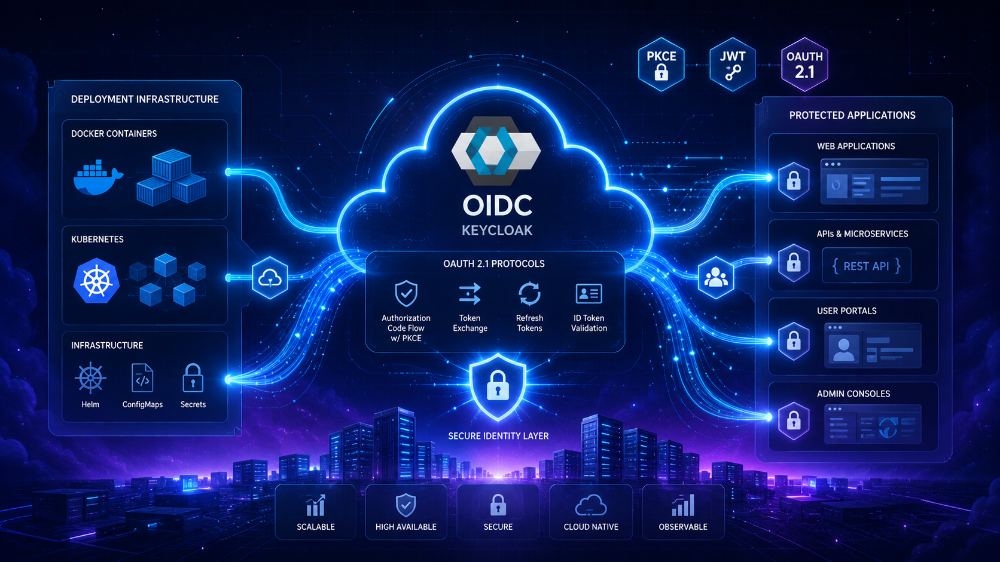
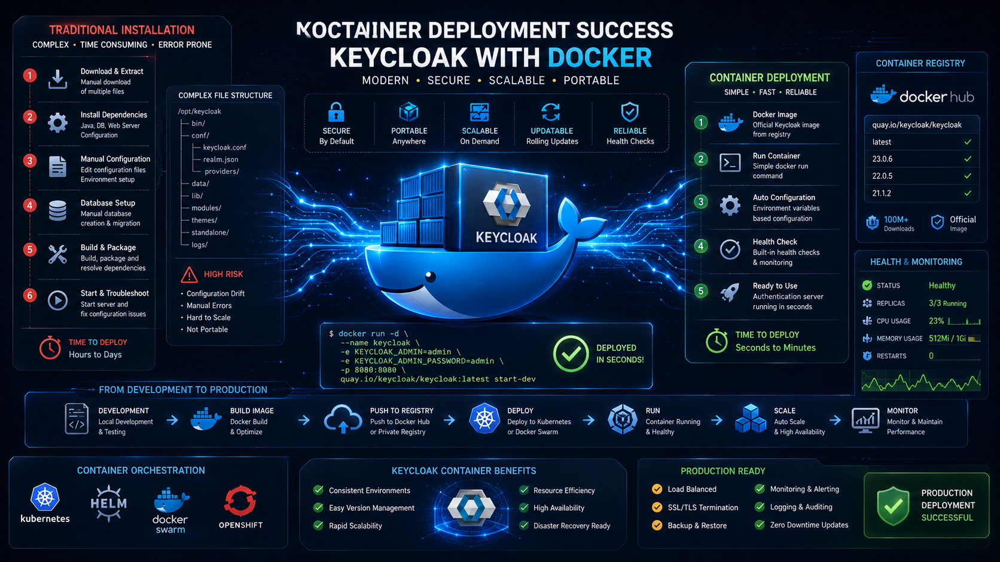
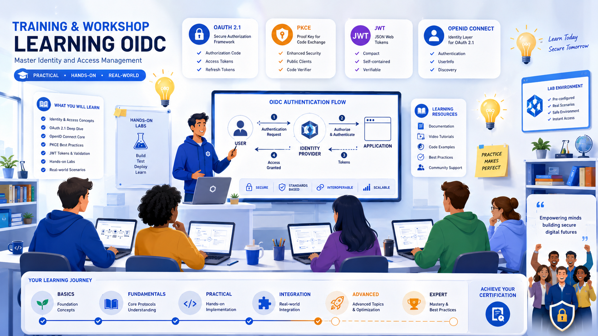
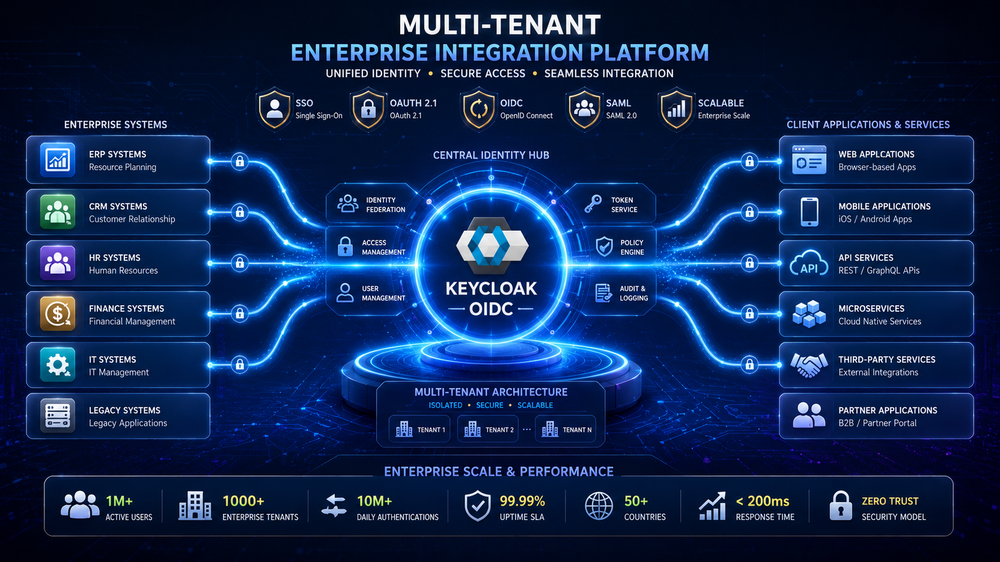

Tempo reduzido de implantação
Keycloak provisionado por rotina automatizada, com baseline versionada.
Abrir downloadProteção com OAuth 2.1 e PKCE, deploy automatizado e documentação objetiva para ambientes corporativos e públicos.
Um conjunto único para operar OpenID Connect com previsibilidade e segurança.
Keycloak provisionado por rotina automatizada, com baseline versionada.
Abrir download
Fluxo compatível com OAuth 2.1, PKCE obrigatório e validação de tokens.
Detalhes técnicos
Containers Docker e práticas aptas à evolução em infraestrutura atual.
Guia de setup
Mesmo processo entre ambientes de laboratório, homologação e produção.
Documentação
Figuras em alta para oficinas, apresentações e kits internos.
Explorar galeria
Baseline pública para auditoria colaborativa e integração gradual.
Repositório no GitHubAdapte a mesma fundação técnica a órgãos, empresas, integradores e treinamentos.
Portais internos e federação de identidade entre unidades administrativas.

Autenticação centralizada para múltiplos sistemas, com menor custo operacional por projeto.

Provas de fluxo OAuth com exemplos objetivos para acelerar o time técnico.
Laboratório padronizado para oficinas e trilhas de aprendizado em identidade federada.
Dez imagens panorâmicas 16:9 para comunicação institucional e documentação externa.
Estruture o relacionamento conforme disponibilidade interna e exigências de suporte.